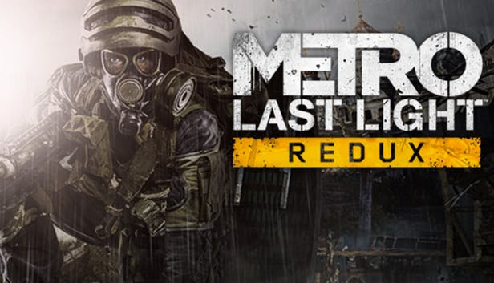
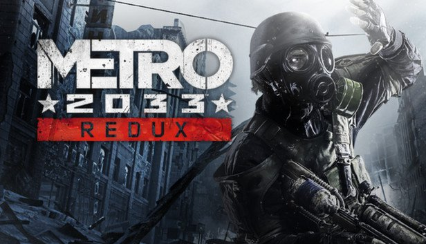

Inspirowana cyklem postapokaliptycznych powieści Dmitrija Głuchowskiego
seria pierwszoosobowych strzelanek (FPS). Marka wykreowana została przez ukraińskie studio 4A Games,
a obecnie prawa do niej znajdują się w posiadaniu firmy Deep Silver.
Źródło: https://www.gry-online.pl/
Główny bohater powieści "Metro 2033" oraz gier ukraińsko - rosyjskich Metro 2033,Metro: Last Light oraz w Metro Exodus.
Były żołnierz Rosji i lider stalkerów z Zakonu Sparty. Poważny i zdecydowany. Przebywa w Polis, a po odkryciu Metro-2 - w D6. Ma córkę w wieku Artema - Annę.
Córka Młynarza, dowódcy Zakonu Sparty. Jest także żoną głównego bohatera Artyoma